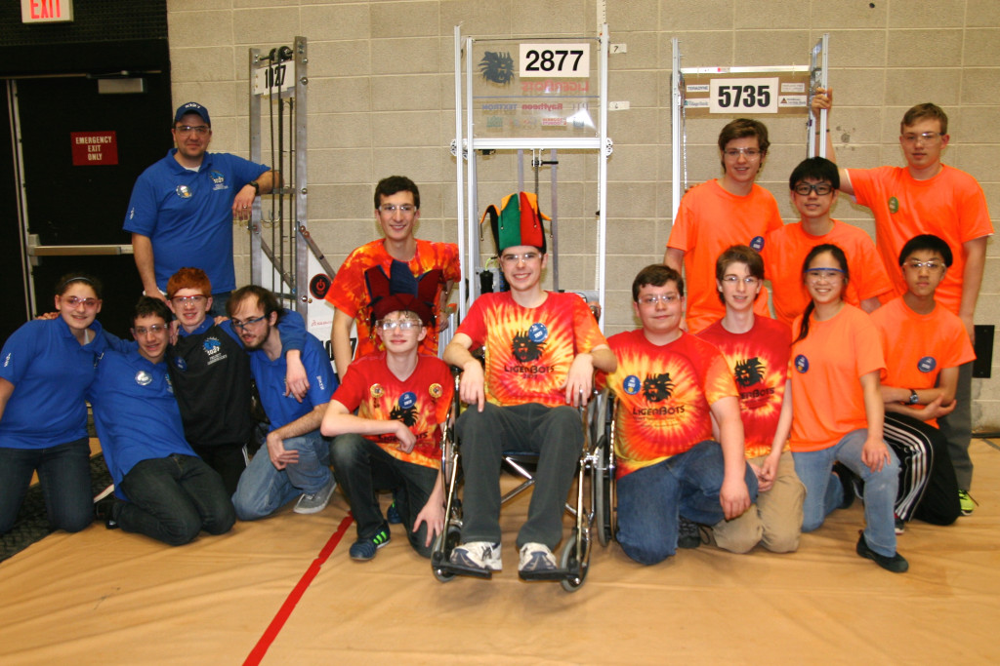
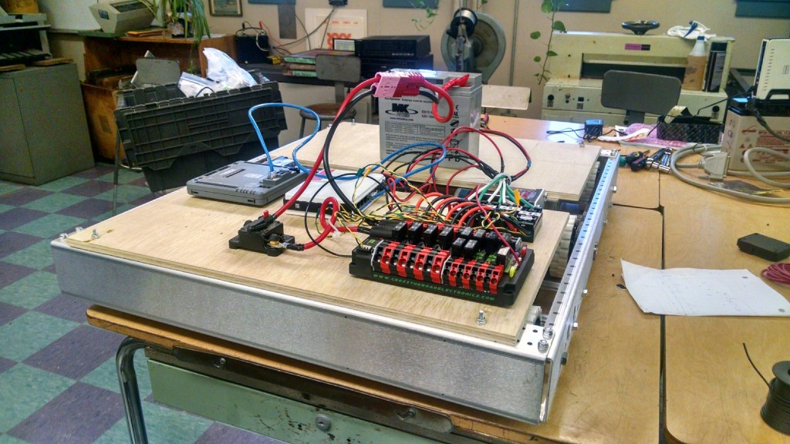
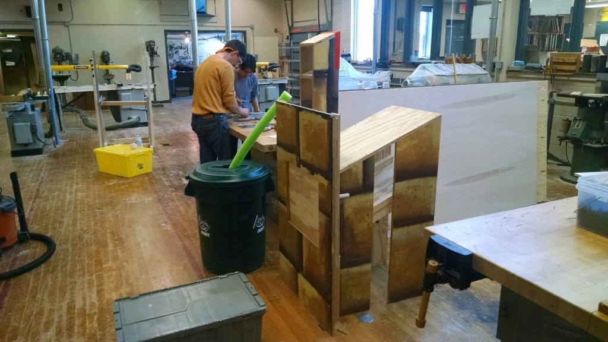

<?xml version="1.0" encoding="UTF-8"?><rss version="2.0"
	xmlns:content="http://purl.org/rss/1.0/modules/content/"
	xmlns:wfw="http://wellformedweb.org/CommentAPI/"
	xmlns:dc="http://purl.org/dc/elements/1.1/"
	xmlns:atom="http://www.w3.org/2005/Atom"
	xmlns:sy="http://purl.org/rss/1.0/modules/syndication/"
	xmlns:slash="http://purl.org/rss/1.0/modules/slash/"
	>

<channel>
	<title>LigerBlog &#187; Ilias Vamvakas</title>
	<atom:link href="http://ligerbots.org/ligerblog/author/kingfisher/feed/" rel="self" type="application/rss+xml" />
	<link>http://ligerbots.org/ligerblog</link>
	<description>FRC Team 2877 Blog</description>
	<lastBuildDate>Sun, 22 Mar 2015 02:19:08 +0000</lastBuildDate>
	<language>en-US</language>
	<sy:updatePeriod>hourly</sy:updatePeriod>
	<sy:updateFrequency>1</sy:updateFrequency>
	<generator>http://wordpress.org/?v=4.3.1</generator>
	<item>
		<title>How we did at Dartmouth</title>
		<link>http://ligerbots.org/ligerblog/2015/03/how-we-did-at-dartmouth/</link>
		<comments>http://ligerbots.org/ligerblog/2015/03/how-we-did-at-dartmouth/#comments</comments>
		<pubDate>Sun, 15 Mar 2015 22:59:15 +0000</pubDate>
		<dc:creator><![CDATA[Ilias Vamvakas]]></dc:creator>
				<category><![CDATA[Business]]></category>
		<category><![CDATA[Competition]]></category>
		<category><![CDATA[Outreach]]></category>
		<category><![CDATA[Programming]]></category>
		<category><![CDATA[Robot Build]]></category>

		<guid isPermaLink="false">http://ligerbots.org/ligerblog/?p=73</guid>
		<description><![CDATA[This weekend at UMass Dartmouth, the Newton LigerBots Team #2877 turned in an excellent performance in their first district meet of the 2015 FIRST Robotics Competition season. We made it to semifinals with our alliance finishing third in the tournament. We won the District Chairman&#8217;s Award,  this automatically qualifies us to compete in the District Championship in April, for the chance &#8230; <a href="http://ligerbots.org/ligerblog/2015/03/how-we-did-at-dartmouth/" class="more-link">Continue reading <span class="screen-reader-text">How we did at Dartmouth</span></a>]]></description>
				<content:encoded><![CDATA[<p>This weekend at UMass Dartmouth, the Newton LigerBots Team #2877 turned in an excellent performance in their first district meet of the 2015 <em>FIRST</em> Robotics Competition season.</p>
<ul>
<li>We made it to semifinals with our alliance finishing third in the tournament.</li>
<li>We won the District Chairman&#8217;s Award,  this automatically qualifies us to compete in the District Championship in April, for the chance to advance to the <em>FIRST</em> World Championships later this spring.</li>
<li>Three members of the team won nominations to advance in the district-wide competitions for individual awards:
<ul>
<li>Head coach <strong>Charles Hurwitz</strong> will now advance to the district championship level for the Woodie Flowers Award</li>
<li><strong>Max Tepermeister</strong> and <strong>Ilias Vamvakas</strong> will now advance to the district championship level for the Dean’s List Award</li>
</ul>
</li>
</ul>
<p>Currently, the LigerBots are ranked 44th out of 175 teams in New England, with one more tournament to be played on <strong>March 27-28</strong> at Northeastern and then the District Championship at WPI on <strong>April 9-11</strong>.  As always, these competitions are a blast for spectators, too.  Come down to Northeastern or WPI to cheer us on!</p>
<p>A special thanks to teams 5735, The Control Freaks,  and 1027, Project Jabberwocky for their help in our elimination alliance.</p>
<figure id="attachment_75" style="width: 660px;" class="wp-caption aligncenter"><a href="../../../wp-content/uploads/2015/03/3-Drive-teams-Dartmouth.jpg"></a><figcaption class="wp-caption-text">The drive teams of teams from our elimination alliance.</figcaption></figure>
]]></content:encoded>
			<wfw:commentRss>http://ligerbots.org/ligerblog/2015/03/how-we-did-at-dartmouth/feed/</wfw:commentRss>
		<slash:comments>0</slash:comments>
		</item>
		<item>
		<title>Summary of Febuary</title>
		<link>http://ligerbots.org/ligerblog/2015/03/summary-of-febuary/</link>
		<comments>http://ligerbots.org/ligerblog/2015/03/summary-of-febuary/#comments</comments>
		<pubDate>Wed, 11 Mar 2015 22:15:39 +0000</pubDate>
		<dc:creator><![CDATA[Ilias Vamvakas]]></dc:creator>
				<category><![CDATA[Business]]></category>
		<category><![CDATA[Outreach]]></category>
		<category><![CDATA[Programming]]></category>
		<category><![CDATA[Robot Build]]></category>
		<category><![CDATA[Uncategorized]]></category>
		<category><![CDATA[Updates]]></category>

		<guid isPermaLink="false">http://ligerbots.org/ligerblog/?p=70</guid>
		<description><![CDATA[February was an incredibly busy this month for the LigerBots.  We marked the end of the build season and began competition preparation. As a New England team, we got our fair share of snow days. We lost 6 days to snow, an entire week’s worth of build season. However, we were actually able to utilize &#8230; <a href="http://ligerbots.org/ligerblog/2015/03/summary-of-febuary/" class="more-link">Continue reading <span class="screen-reader-text">Summary of Febuary</span></a>]]></description>
				<content:encoded><![CDATA[<p><span style="color: #003366;"></span></p>
<p>February was an incredibly busy this month for the LigerBots.  We marked the end of the build season and began competition preparation. As a New England team, we got our fair share of snow days. We lost 6 days to snow, an entire week’s worth of build season. However, we were actually able to utilize this time to our own advantage and not let it go to waste: we used Creo to troubleshoot many issues before actually building the robot; we developed code on our mock chassis; and we met outside of our normal meetings at different team members’ houses, even in the height of the blizzard, to work on our robot. As a result, we managed to finish on time. In fact, this year marks the first time we have not only completed the robot on schedule, but have done so with sufficient time for code testing. This could not have happened without the donations from our sponsors, allowing us to purchase robot parts in a timely manner as well as additional pieces with which to practice and gain experience. In preparation for competitions, we have worked on scouting, evaluating robots from recorded matches from last weekend’s competitions all over the country.  After seeing these videos, we feel confident that we will have one of the better robots on the field. Our lifter is fast, our pickup is robust, and our tote retention is good (there is a rendered image of our robot below).</p>
<p>The business and outreach team has also been very busy. Outreach continued to organize and run events. We received the money from January’s month-long fundraiser at Whole Foods, which was a huge success! The team presented at a Providence Bruins hockey game, where we demonstrated our 2014 robot to the fans and let dozens of them drive it. This past week, we presented to rising freshman at the Newton South parents night in order to recruit for next year. We wrote our Chairman’s Award submission and are working on our video, which will be judged at the competitions. In preparation for these events, outreach has been designing new graphics and handouts for our t-shirts and pit banners. This year we actually redesigned our pit and our shirts, so that they look better and more professional.</p>
<p><span style="color: #003366;"> </span></p>
]]></content:encoded>
			<wfw:commentRss>http://ligerbots.org/ligerblog/2015/03/summary-of-febuary/feed/</wfw:commentRss>
		<slash:comments>0</slash:comments>
		</item>
		<item>
		<title>Let it Snow</title>
		<link>http://ligerbots.org/ligerblog/2015/01/let-it-snow/</link>
		<comments>http://ligerbots.org/ligerblog/2015/01/let-it-snow/#comments</comments>
		<pubDate>Fri, 30 Jan 2015 13:01:22 +0000</pubDate>
		<dc:creator><![CDATA[Ilias Vamvakas]]></dc:creator>
				<category><![CDATA[Business]]></category>
		<category><![CDATA[Outreach]]></category>
		<category><![CDATA[Programming]]></category>
		<category><![CDATA[Robot Build]]></category>

		<guid isPermaLink="false">http://ligerbots.org/ligerblog/?p=52</guid>
		<description><![CDATA[With snow totals around 30&#8243; over the past couple of days, the weather in Newton has in fact been frightful, but that didn&#8217;t stop the LigerBots. Because of the blizzard our schools were closed, and as such we could not hold our regular meetings at school, however we were able to get our robot, computers, &#8230; <a href="http://ligerbots.org/ligerblog/2015/01/let-it-snow/" class="more-link">Continue reading <span class="screen-reader-text">Let it Snow</span></a>]]></description>
				<content:encoded><![CDATA[<p>With snow totals around 30&#8243; over the past couple of days, the weather in Newton has in fact been frightful, but that didn&#8217;t stop the LigerBots. Because of the blizzard our schools were closed, and as such we could not hold our regular meetings at school, however we were able to get our robot, computers, and many of our parts to our CEO&#8217;s house, and work straight through the storm, some people even stayed overnight.</p>
<p>Not only did we not lose build time during the storm, but we actually gained some, and got a lot done: we finished our Creo (CAD) of the robot (above), we continued the assembly of our chassis, and electronics plates, we organized another event at one of our local elementary schools, and we started the process of approaching three new potential sponsors.</p>
<p>This coming week our programming group will be visiting a local software company, where they will be working on our vision tracking code for this year.</p>
<p>&nbsp;</p>
<p>Cute Robot Picture of the Week:</p>
<p><a href="../../../wp-content/uploads/2015/01/snow-day-robot-of-the-week.jpg"></a></p>
]]></content:encoded>
			<wfw:commentRss>http://ligerbots.org/ligerblog/2015/01/let-it-snow/feed/</wfw:commentRss>
		<slash:comments>0</slash:comments>
		</item>
		<item>
		<title>Pancakes!</title>
		<link>http://ligerbots.org/ligerblog/2015/01/pancakes/</link>
		<comments>http://ligerbots.org/ligerblog/2015/01/pancakes/#comments</comments>
		<pubDate>Mon, 26 Jan 2015 06:20:50 +0000</pubDate>
		<dc:creator><![CDATA[Ilias Vamvakas]]></dc:creator>
				<category><![CDATA[Outreach]]></category>

		<guid isPermaLink="false">http://ligerbots.org/ligerblog/?p=47</guid>
		<description><![CDATA[]]></description>
				<content:encoded><![CDATA[<p><a href="../../../wp-content/uploads/2015/01/Pancakes-3.psd.png"></a></p>
]]></content:encoded>
			<wfw:commentRss>http://ligerbots.org/ligerblog/2015/01/pancakes/feed/</wfw:commentRss>
		<slash:comments>0</slash:comments>
		</item>
		<item>
		<title>What We Did Over The Past Week</title>
		<link>http://ligerbots.org/ligerblog/2015/01/44/</link>
		<comments>http://ligerbots.org/ligerblog/2015/01/44/#comments</comments>
		<pubDate>Sat, 24 Jan 2015 20:58:53 +0000</pubDate>
		<dc:creator><![CDATA[Ilias Vamvakas]]></dc:creator>
				<category><![CDATA[Uncategorized]]></category>

		<guid isPermaLink="false">http://ligerbots.org/ligerblog/?p=44</guid>
		<description><![CDATA[Sorry for the absence of posts over this past week, here is what you missed&#8230; Mechanical: For the first part of the week we could not physically work on our robot because the parts we needed were ordered, and did not arrive until Thursday the 22nd, so we sent most of out week troubleshooting prototypes, finalizing &#8230; <a href="http://ligerbots.org/ligerblog/2015/01/44/" class="more-link">Continue reading <span class="screen-reader-text">What We Did Over The Past Week</span></a>]]></description>
				<content:encoded><![CDATA[<p>Sorry for the absence of posts over this past week, here is what you missed&#8230;</p>
<p><strong>Mechanical:</strong></p>
<p>For the first part of the week we could not physically work on our robot because the parts we needed were ordered, and did not arrive until Thursday the 22nd, so we sent most of out week troubleshooting prototypes, finalizing our designs, and CADing our ideas. We finalized our design for our tote lifting mechanism, and incorporated it into our CAD designs. As of Thursday all parts for the chassis have arrived, and we anticipate we will have a driving, full size robot base by the end of Monday the 25th. The parts for our lifter mechanisms are en route and scheduled to arrive by 1/28. We began finalizing designs of a kicker mechanism to push out the totes from our robot. After going through many designs, we concluded that the best design is one that pushes a stack out of the robot by pushing in the middle of the fourth tote in the stack, with a stabilizer at the top for the can, so that it doesn&#8217;t fall off in the processes. This was designed to functions best when our robot is angled on the scoring platform, as that is when the stack would experience the least motion being pushed out, and as it would allow our robot to align itself consistently. We are in the process of putting a design into the CAD.</p>
<p><strong>Outreach:</strong></p>
<p>This week was a busy week for the team in terms of outreach, we participated in two events as well as continuing our month long fundraiser. This week, we presented on STEM, and FIRST, as well as demoing our 2014 robot at Franklin elementary school, and at Newton North&#8217;s High School&#8217;s Just Think Expo. Both events were successful, between them we presented to lots people, and were able to spread the ideas and importance of STEM to all age groups from second grader to senior citizen. In addition every day for the entire month of January the team has been staffing a table at our sponsor, Whole Foods Market at four corners, at which we are presenting about the team, and about STEM, and asking customers to buy special coupons at checkout, the money from which goes towards supporting LigerBots.</p>
<p><strong>Electrical and Programming:</strong></p>
<p>This week the electrical group integrated more motor controllers, solonoids, and pneumatics, onto our test chassis, as well as cleaning up wire routing, and adding better wire connectors. In addition electrical began to CAD the final positions of the electronic components on our final robot. Programming was able to flash the RoboRIO with the new C++ code, and were able to get both test chassis to drive, fore pistons, and get sensor inputs.</p>
<p><strong>Field Elements:</strong></p>
<p>On Monday the 19th the step, the last of our field elements was completed. Now that we have a complete set of field elements the field element group has disbanded and joined other groups</p>
<p>Cute robot picture of the week:</p>
<figure style="width: 500px;" class="wp-caption aligncenter"><figcaption class="wp-caption-text">Cute robot 1-24-2015</figcaption></figure>
]]></content:encoded>
			<wfw:commentRss>http://ligerbots.org/ligerblog/2015/01/44/feed/</wfw:commentRss>
		<slash:comments>0</slash:comments>
		</item>
		<item>
		<title>Why We Switched to C++</title>
		<link>http://ligerbots.org/ligerblog/2015/01/why-we-switched-to-c/</link>
		<comments>http://ligerbots.org/ligerblog/2015/01/why-we-switched-to-c/#comments</comments>
		<pubDate>Tue, 13 Jan 2015 23:34:20 +0000</pubDate>
		<dc:creator><![CDATA[Ilias Vamvakas]]></dc:creator>
				<category><![CDATA[Programming]]></category>

		<guid isPermaLink="false">http://ligerbots.org/ligerblog/?p=37</guid>
		<description><![CDATA[We Are Now In C++ !!! As we were preparing to configure the RoboRio, we noticed that the java run-time environment (JRE) takes up about half of the available memory in the RoboRIO, which significantly lowers the space available for coding. This Year in addition to the standard drive and control code,  we will be working with vision &#8230; <a href="http://ligerbots.org/ligerblog/2015/01/why-we-switched-to-c/" class="more-link">Continue reading <span class="screen-reader-text">Why We Switched to C++</span></a>]]></description>
				<content:encoded><![CDATA[<p><strong>We Are Now In C++ !!!</strong></p>
<p>As we were preparing to configure the RoboRio, we noticed that the java run-time environment (JRE) takes up about half of the available memory in the RoboRIO, which significantly lowers the space available for coding. This Year in addition to the standard drive and control code,  we will be working with vision processing, and various other sensory inputs, all of which will take up space on the RoboRIO, so the more space we have the better.  In addition, the the Open Computer Vision Library (OpenCV Library), which we will be using to build our vision code, is native in C++, so we will not have to convert.</p>
<figure style="width: 503px;" class="wp-caption aligncenter"><figcaption class="wp-caption-text">Cool Matrix Code</figcaption></figure>
<p>&nbsp;</p>
]]></content:encoded>
			<wfw:commentRss>http://ligerbots.org/ligerblog/2015/01/why-we-switched-to-c/feed/</wfw:commentRss>
		<slash:comments>0</slash:comments>
		</item>
		<item>
		<title>A very productive week comes to an end.</title>
		<link>http://ligerbots.org/ligerblog/2015/01/a-very-productive-week-comes-to-an-end/</link>
		<comments>http://ligerbots.org/ligerblog/2015/01/a-very-productive-week-comes-to-an-end/#comments</comments>
		<pubDate>Sun, 11 Jan 2015 20:55:09 +0000</pubDate>
		<dc:creator><![CDATA[Ilias Vamvakas]]></dc:creator>
				<category><![CDATA[Updates]]></category>

		<guid isPermaLink="false">http://ligerbots.org/ligerblog/?p=24</guid>
		<description><![CDATA[Mechanical &#38; CAD:  On Sunday January 4th, the day after the after kickoff, the whole team got together to decide on game strategy, and decided that this year we would try to go for making the highest stacks of totes we could, and would intake primarily from the feeder stations, but would build in the ability &#8230; <a href="http://ligerbots.org/ligerblog/2015/01/a-very-productive-week-comes-to-an-end/" class="more-link">Continue reading <span class="screen-reader-text">A very productive week comes to an end.</span></a>]]></description>
				<content:encoded><![CDATA[<p><strong>Mechanical &amp; CAD: </strong></p>
<p>On Sunday January 4th, the day after the after kickoff, the whole team got together to decide on game strategy, and decided that this year we would try to go for making the highest stacks of totes we could, and would intake primarily from the feeder stations, but would build in the ability to pick up of the ground. The next day on Monday the 4th the entire team deliberated again over chassis shape, and general solutions to the challenge, and concluded that we would be using a C-shaped chassis, and creating a mechanism to build a stack of totes by picking up a recycling bin game piece, lift it the height of a tote, place a tote below it, and continue until we had a stack of six. This way we could build an entire stack inside our robot which we could support internally limiting our risk of losing a stack. Over the next couple of days the mechanical group sat down and discussed possible solutions as well as drafting ideas for mechanisms. They then proceed to start building prototypes. All prototypes of designs are being &#8216;CADded&#8217; in real time by our CAD group. Images and descriptions of said prototypes will be posted on Monday.</p>
<p><strong>Business and Outreach:</strong></p>
<p>Even though we are in the height of build season LigerBots&#8217; presence in the community is as  evident as ever! This month we are having a fundraiser in partnership with our sponsor Whole Foods, in which Whole Foods will provide the option to shoppers to donate money to the team. We will have a table set up at Whole Foods, manned by team members every day for the entire month. We will also be attending some of our local elementary schools to spread FIRST and STEM to the students of those schools. But, that is not all on Sunday February 8th we will be running the Providence Bruins half time show at which we will, demonstrate our 2014 robot, give out team tee-shirts, and talk about STEM and FIRST.</p>
<p><strong>Electrical, Programming, and Kit-bot:</strong></p>
<p>On Saturday January 10th the Electrical &amp; Pneumatic group join forces with the Kit-bot group to create a system for the Electronics group to test code on, below is a picture of our test chassis, complete with the new roboRIO, talons, and pneumatic systems, and four cim drive train! This chassis will be continually updated so that its hardware matches that that will eventually be on our final robot.</p>
<figure id="attachment_26" style="width: 660px;" class="wp-caption aligncenter"><a href="../../../wp-content/uploads/2015/01/IMG_20150110_103448817_HDR.jpg"></a><figcaption class="wp-caption-text">Our trial chassis with the new electronics</figcaption></figure>
<p><strong>Field Elements Group:</strong></p>
<p>As of Friday our Field Elements group finished our feeder station, and we are now ready test prototypes for intake of noodles and totes:</p>
<figure id="attachment_25" style="width: 660px;" class="wp-caption aligncenter"><a href="../../../wp-content/uploads/2015/01/IMG_20150110_122703200.jpg"></a><figcaption class="wp-caption-text">We took old set material from theater.</figcaption></figure>
]]></content:encoded>
			<wfw:commentRss>http://ligerbots.org/ligerblog/2015/01/a-very-productive-week-comes-to-an-end/feed/</wfw:commentRss>
		<slash:comments>0</slash:comments>
		</item>
	</channel>
</rss>

<!-- Localized -->